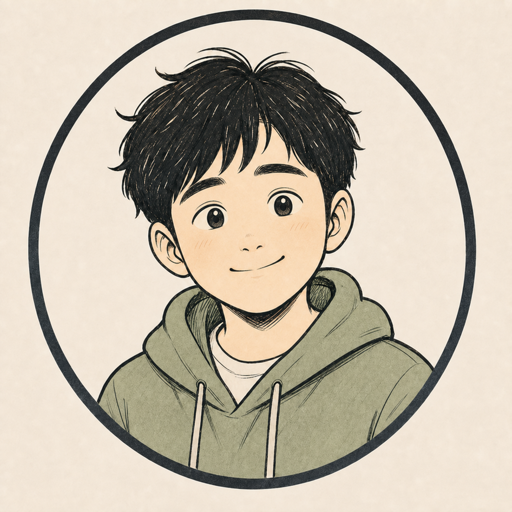

01 / NOW
지금의 김콩
- 대화하기
- 두 선택지 비교하기
- 허락한 내용 기억하기
- 지난 대화 이어가기
- 간단한 번역하기
- 기기 안에서 로컬 AI 돌리기
02 / ORIGIN
꼭 그렇게 똑똑해야 하나?
고성능 AI 에이전트 시장이 빠르게 커지는 걸 보면서, 반대로 조금 부족해도 친구 같은 에이전트는 없을까 생각했습니다.
ElizaOS와 에이전트 생태계를 오래 지켜봤고 관련 코인도 샀습니다. 결과는 좋지 않았지만, 에이전트라는 아이디어는 계속 재미있었습니다.
2026년 4월, 직접 만들어보기로 했습니다.
03 / JOURNEY
잘 안 되면 고치고, 되면 다음 걸 붙입니다.
로컬 모델, 기억, 번역, TestFlight, App Store. 한 번에 잘된 것보다 안 돼서 다시 고친 일이 더 많았습니다.
개발 히스토리와 앞으로의 로드맵 보기 →04 / DIRECTION
친구에게 도구를 하나씩.
기억을 더 잘 이어가고, 음성·검색·웹·알림·캘린더 같은 도구를 붙이고, 필요할 때는 사용자가 선택한 외부 LLM도 연결할 수 있게 발전시켜보려 합니다.
LOCAL FIRST,
NOT LOCAL ONLY.
기본은 내 기기에서. 더 큰 힘이 필요할 때만 사용자가 선택해서 연결하는 방향입니다.